From fruit and state to millions of titles
Gregory S. DeLozier, PhD
Seven rows. Oranges from Florida and California.
Follow the rows through the SQLite illustrations.
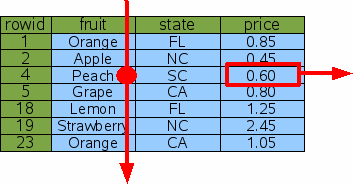
Time grows with N.
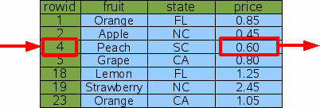
Time grows with log N.
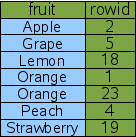
A sorted copy of a column, plus rowids.
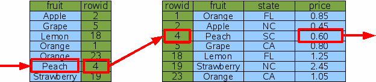
Two binary searches: the index, then the table.
| Plan text | Meaning |
|---|---|
SCAN fruitsforsale |
Read every row |
SEARCH ... USING INDEX |
Find rows by index |
... COVERING INDEX |
Index alone answers |
USE TEMP B-TREE FOR ORDER BY |
Sort step |
Look for SCAN first.
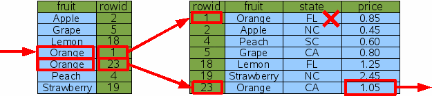
Find the oranges. Check their states.
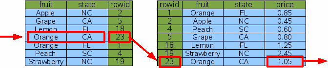
Fruit first; state breaks ties.
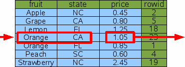
The index contains the answer: price.
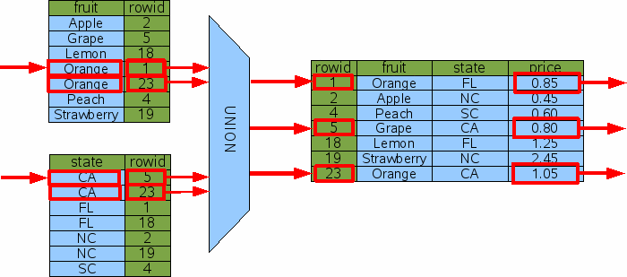
Combine matches; return each matching row once.
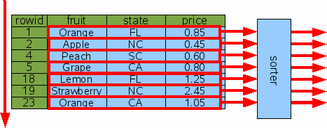
Collect every row, then sort: K log K, plus temporary storage.
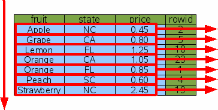
An index is already in order.
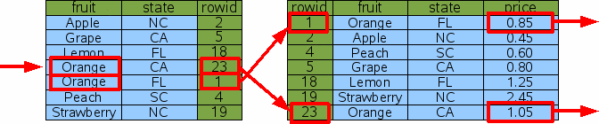
where fruit = 'Orange' order by state, with an index on
(fruit, state).
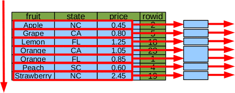
order by fruit, price: the index gives fruit order;
SQLite sorts within each fruit.
SQLite picks among indexes by estimated selectivity.
Without statistics, the choice is close to arbitrary.
It also makes a skip-scan possible.
| File | Rows |
|---|---|
title.basics |
12,811,750 |
title.ratings |
1,713,431 |
Gzip-compressed tab-separated values (TSV). Missing value:
\N.
Personal and non-commercial use only.
Before downloading, add to the root
.gitignore:
**/data/
**/imdb.db
**/imdb.db-*Commit the code and .gitignore. Keep the data local.
Check: git check-ignore -v data/title.basics.tsv.gz
IMDb supplies two compressed data files.
The course supplies import_imdb.py and
schema.sql.
title.basics.tsv.gz and
title.ratings.tsv.gz into data/.python3 import_imdb.py in the code folder.imdb.db.The loader reads local files; it does not download them.
12.8 million rows in 54 seconds. No secondary indexes yet.
| Plan | Time | |
|---|---|---|
| No index | SCAN titles |
4,536 ms |
create index ... (primary_title) |
SEARCH ... USING INDEX |
under 0.1 ms |
47 titles are called “The Godfather”.
| Index | Build | Size added |
|---|---|---|
primary_title |
18.4 s | 381 MB |
title_type, start_year |
16.4 s | 263 MB |
title_type, start_year, primary_title |
30.5 s | 536 MB |
ratings(num_votes) |
0.7 s | 18 MB |
500,000 inserts: 0.25 s with no index, 0.37 s with one, 1.06 s with three.
| Index | Time |
|---|---|
| No useful index | 4,435 ms |
start_year |
37.7 ms |
(title_type, start_year) |
0.1 ms |
| Conditions | Index used |
|---|---|
title_type |
First column |
title_type and start_year |
Both columns |
start_year alone |
None, before analyze |
start_year alone: full walk of the index, 432 ms.
After analyze: skip-scan, 1.9 ms.
title_type alone: search, 18 ms.
select primary_title ... where title_type = ? and start_year = ?
| Time | |
|---|---|
| Two-column index | 5.0 ms |
| Covering index | 1.4 ms |
| Time | |
|---|---|
| One term unindexed | 4,568 ms |
| Both indexed | 0.1 ms |
| Query | Index | Time |
|---|---|---|
like 'The Godfather%' |
Ordinary | 4,669 ms, scan |
like 'The Godfather%' |
collate nocase |
0.2 ms |
like '%Godfather%' |
Ordinary or nocase |
5,024 ms, scan |
A wildcard at the front cannot use an ordinary index.
| Plan | Time | |
|---|---|---|
| No index | SCAN + TEMP B-TREE |
77 ms |
Index on num_votes |
SCAN ... USING INDEX |
under 0.1 ms |
The plan still says SCAN. The sort is gone, and limit
stops the walk.
| Time | |
|---|---|
| 2,000 queries, one per title | 148 ms |
| One join | 10 ms |
| Fetch 643,991 years, count in Python | 263 ms |
group by in SQL, 15 rows |
164 ms |
Measure.
create or replace procedure
change_owner(pet integer, new_owner text)
language plpgsql
as $$ ... $$;
call change_owner(1, 'Sam');One call: read, update, log.
SQLite has none. This is PostgreSQL.
Start from the queries.
Index what you search, join, and sort by.
Equality columns first, range columns last.
Drop an index that starts another.
Read the plan, then measure.
Longest movies over 300 minutes.
Titles rated 9.5 or higher with 10,000 or more votes.
Average rating of movies by decade.
Read the plan. Predict the index. Check.